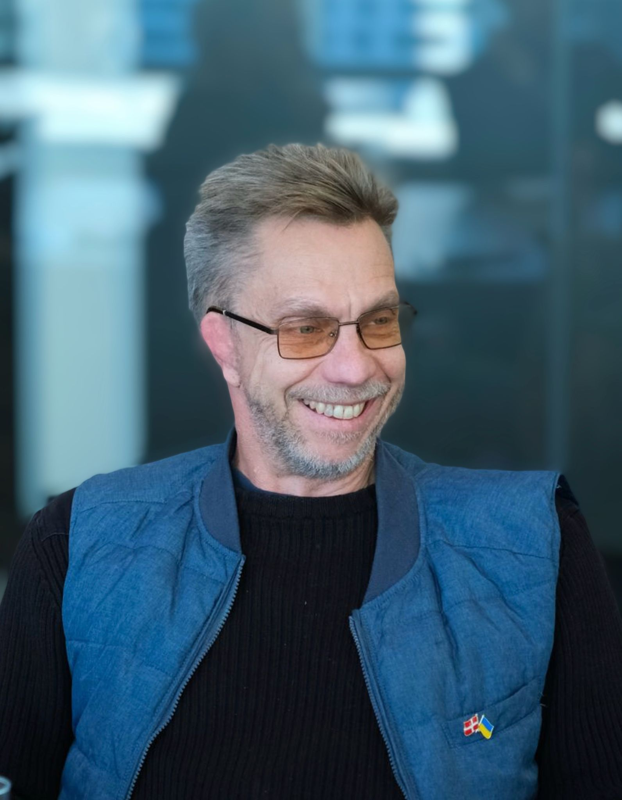
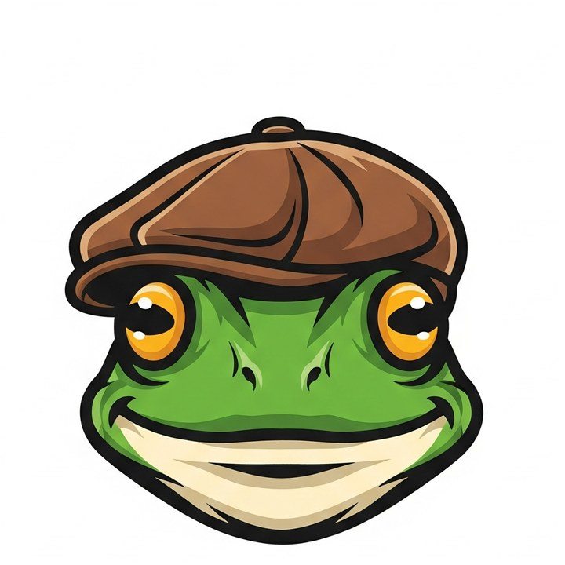

Building compliant, sovereign health data infrastructure across Sweden, Denmark, and the EU — MDR, EUDI Wallet, AI sandbox. 25+ years in healthcare and enterprise IT.
I'm not a software developer. I'm the one who makes sure the system holds together — technically, operationally, and regulatorily. At Scita I designed the technical infrastructure for an AI-powered precision prevention platform for women navigating perimenopause and menopause, built on modern composable tools wrapped in compliance frameworks I've run at enterprise scale. Every decision explainable, governable, auditable.
Enterprise IT wisdom meets AI-era building. Advisory work for health and life-sciences ventures facing post-merger tech integration, AI readiness in regulated environments, compliance architecture (GDPR, MDR, ISO), and interim technical leadership through transitions. Also where I publish Field Notes — what I'm learning building with AI as a non-traditional developer.

A small-batch craft brewery in Skåne. 13 varieties hand-brewed in 23-litre batches on Grainfather equipment — from classic pilsner and stout to an unusual low- and non-alcoholic line. Beer for special occasions that doesn't trade enjoyment for wellbeing. The same craft instinct that shapes everything else.
«Синьо-жовта машина» — the blue-and-yellow car.
Since Russia invaded Ukraine in February 2022, I've volunteered with Blågula Bilen — a Swedish non-partisan, non-religious organisation founded by Take Aanstoot. Volunteers buy used 4×4s and trucks, fix them, fill them with equipment and medical supplies, and drive them to Ukraine, where both the vehicles and the cargo are donated to Ukrainian defence forces and civilian populations. As of early 2026, the organisation has delivered more than 1,400 vehicles.
Smart, proactive support for Ukraine is also smart, proactive defence for Scandinavia. Sovereign infrastructure, compliance, and resilience aren't abstractions — they're what holds when things break. The same instinct shapes the work at Scita and FlexIT.
blagulabilen.se — about, donate, volunteer
25+ years in enterprise IT across healthcare, medtech, and manufacturing — post-merger integrations that can't fail, compliance frameworks that survive audits, legacy modernisation without burning down the house. The unsexy work that breaks at 3am.
Education: BSc Information Technology, Lund University
Certifications: ITIL Foundation · AWS Cloud Practitioner · Certified Scrum Master · MIT Digital Transformation & AI · UGL
Languages: Swedish (native) · English (fluent) · Danish (conversational)